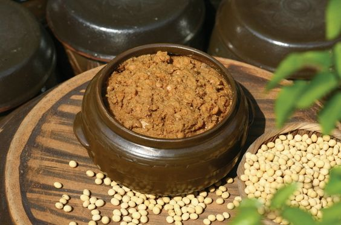

장독에 담긴 된장
된장을 만드는 콩과 함께 있는 된장입니다.
된장을 만드는 콩과 함께 있는 된장입니다.
요리에 쓰기 위한 고추장처럼 보입니다.
메주는 콩을 삶고 으깨어 말린 장류의 기본재료입니다.
고추장은 잘 숙성되면 검붉은색을 띱니다.
메주는 된장 뿐만 아니라 모든 장을 만들때 쓰입니다.
고추장은 고우며 걸죽합니다.
진정한 한국인들의 소울푸드 입니다.
고추장은 한국인의 삶에 깊게 침투해있습니다.
된장찌개는 메인이 됩니다.
김치찌개는 매콤합니다.
끓는 소리는 즐겁습니다.
고추장과 된장은 형제입니다.
된장찌개에는 여러재료가 들어갈 수 있습니다.
고추장은 다양한 종류가 있습니다.
두부된장찌개는 유명합니다.
고추장은 입맛을 돋굽니다.
쌈장은 만들어진 용도가 있습니다.
고추장과 참치는 좋은 조합입니다.
썸장은 무언가를 찍어먹기 좋습니다.
고추장은 좋은 반찬을 만듭니다.